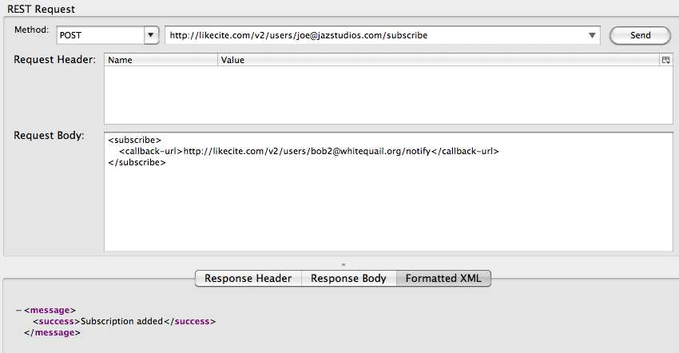
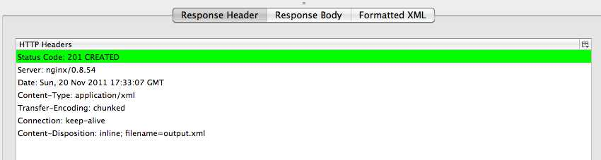

POSTing a callback url in the format below subscribes the sender to changes to {email}user's bookmarks. When a bookmark belonging to {email} is modified, a message will be sent to the callback urls provided during subscription. See an example of the callback url format below. This service validates the POSTed XML for syntax and for adherence to the RelaxNG spec.
Usage Example:


Django admin interface showing that a subscriber has been added.